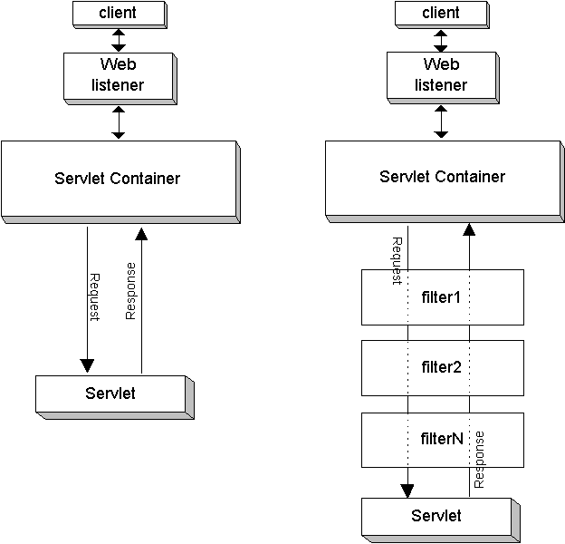

简单的了解一下其基本的容器，再配合配置文件来了解一下。
术语
Server
在 Tomcat 的世界中， Server 代表了整个容器。 Tomcat 提供了了 Server 接口的一个默认实现，很少有用户会自定义 Server.
Service
一个 Service 存在于一个 Server 中，其是一个中间组件，其将多个 Connector 连接到一个 Engine。 Service 元素也很好由用户定义，默认的实现很简单但是也高效。
Engine
一个 Engine 代表了对一特定 Service 的请求处理管道。一个 Service 可能有多个Connector， Engine 会处理所有 Connector 上的请求，并将请求返回到对应的 Connector 上去。 Engine 接口可能也会自定义来实现，但很不常见。
Host
一个 Host 是一个网络名称与此 Tomcat 服务器的关联。 Engine 可有多个 Hosts，Host 元素也支持别名。用户很少自定义 Host ，因为默认的实现提供了很重要的附件功能。
Connector
管理与客户端的连接。Tomcat 内会有多个 Connector，所有的 Connector 都实现了接口 Connector。包括 Coyote Connector （用来支持大部分 HTTP 流量，特别是当将 Tomcat 作为一个独立服务器时）， JK2 Connector（实现了 AJP 协议，用来连接 Tomcat 到 Apache HTTPD 服务器）
Context
Context 代表了一个网页应用。一个 Host 可能会有多个 Context，每个都有一个唯一的路径。 Context 接口可以自定义进行实现，但是很少。因为默认的有很重要的附加功能。
配置示例
Context
Context 代表了一个 网页应用（Web Application），其运行于一个 Host 下面。每个 网页应用 都基于一个 Web Application）Archive(WAR) 文件，或者是一个对应的包含了已解压文件的目录，可以参考 Servlet 规范来了解。
Catalina 通过最长匹配请求的 URI 与 Context 路径来找出使用哪个 网页应用来处理请求。一旦选定， Context 就会选择一个 Servlet 来处理进入的请求，查找顺序及内容根据在 web application deployment descriptor 文件（必须位于网页应用层级内的 /WEB-INF/web.xml）定义的 servlet 映射。
可以定义任意数量的 Context。但每个 Context 必须有唯一的路径。但路径是一个 0 长度的字符串的时候，那么这个就是默认 Context 。没有匹配上任何其他 Context 的请求都会由此 Context 进行处理。
Context 可能会定义下下面几个地方：
- $CATALINA_HOME/conf/context.xml。 所有的 webapps 都会加载。
- $CATALINA_HOME/conf/[enginename]/[hostname]/context.xml.defalut。 特定 Host 下 特定的 Engine 加载。
- $CATALINA_HOME/conf/[enginename]/[hostname]/ 目录下的 .xml 文件中。
- 当上面几个文件都不存在的情况下，会复制 /META-INFO/context.xml
- server.xml 中的 Host 元素下。
web.xml
前面说到， Tomcat 会根据最长路径匹配来选择 Context ，然后 Context 会根据其定义的 Servlet 映射来选择对应的Servlet 来处理请求。
这些 Servlet 就是在 web.xml 中进行定义配置的。
https://docs.oracle.com/cd/B14099_19/web.1012/b14017/filters.htm
有几种类型的元素：
- context-param 一些变量
- [event] listener 事件监听器
- [servlet] filter 用来预处理请求或者后处理响应。
- filter-mapping
- servlet
- servlet-mapping
- error-page
- jsps
Servlets 与 URL 路径
web.xml 定义了 URL 路径与 Servlet 的映射。
Spring MVC web.xml
对于 Spring MVC 而言，有一个最重要的 DispatcherServlet。
可以看到，使用不同的配置文件，针对不同的路径，对其进行了不同的定义。分别为
不过我们主要用了第一个。
<servlet> |
<servlet> |
<servlet> |
那么，根据前文的描述，最终请求都会到达 DispatcherServlet 中进行处理，而如何处理，在前面一篇文章中已经进行了描述
Filter
Filter 是用来预处理请求及后处理响应的。在 Servlet 容器调用 Servlet 一个方法的时候，HTTP 请求默认情况是直接传输给 Servlet。而 Servlet 产生的响应也是直接发送到客户端的，容器不会对内容进行任何的修改。在这种场景下，Servlet 必须处理请求并产生所有的响应。
但有的时候，预处理请求会非常的有用。有的时候，从一个 Servlet 的类中修改响应也有有用。加密就是一个例子。如果 Servlet 产生比较敏感的数据，那么这些数据以可读的形式在网络上传输。一个 Filter 就能加密响应。当然，这要求客户端能够进行解密内容。
Filter 不是 Servlet，他们不会重写 HttpServlet 的方法，例如 doGet(), doPost()。Filter 只是实现了接口 javax.servlet.Filter。
- init()
- destroy()
- doFilter()
如何调用 Filter

Filter 调用的顺序依赖于在 web.xml 中出现的顺序。而响应的顺序则恰好相反。
Evnet Listener
servlet 规范包含了跟踪关键事件的能力，这就是通过 event listener 来实现的。
有两个级别的 listener
- Servlet 上下文级别（application-level）事件 这些事件应用servlet 上下文对象上调用资源或状态。
- Session-level 事件 在 HTTP Session 对象上调用的事件。
每个级别的事件都有两种事件分类：
- 生命周期改变
- 属性改变。
初始化
我们应用中的 web.xml 中定义的 servlet 会进行初始化。我们重点看一下 dispatchServlet。
其继承层级：
DispatcherServlet <- |
HttpServlet 之上久是规范定义的了。所以 Spring 是从 HttpServletBean 开始关注的。
Servlet.init() 会被调用以进行初始化。
HttpServletBean.init()
此方法会将 web.xml 中配置的属性映射到 ServletBean 的属性中，及中调用子类的初始化方法。
|
FrameworkServlet.initServletBean()
此方法的目的是建立 Web 应用的上下文。
|